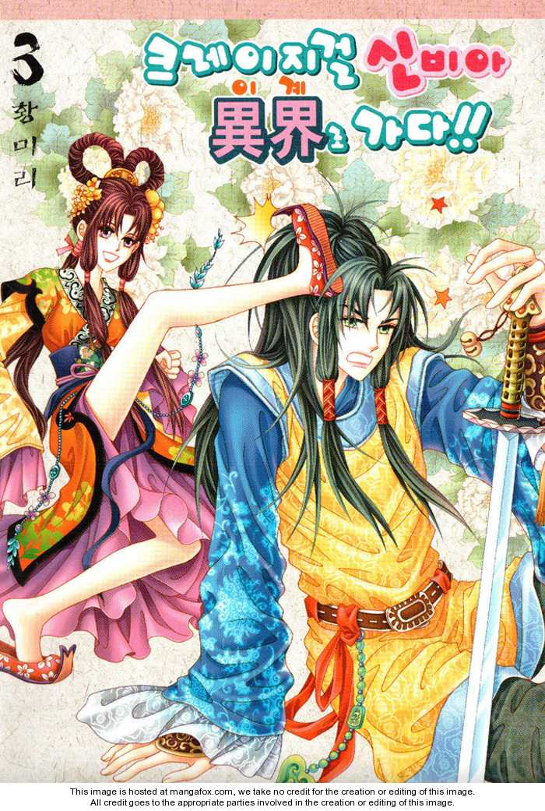

Alternative Name(s): Crazy Girl Shin Bi-Ah Goes to the Alien World!!
Author(s): Hwang Mi-ri
Genres: Adventure, Comedy, Drama, Fantasy, Historical, Martial Arts, Romance, Shoujo, Supernatural
Release: 2008
Satus: Complete
Type: Manhwa
Length: 19 Volumes 85 Chapters
Read Online @:


Notes
A tough yet beautiful highschooler Shin Bia gets into a bit of trouble and instead of submitting to the guys jumps from a tall building...and instead of going splat on the pavement she ends up in an ancient time period?? And she had a look alike that at the time that she jumped from the building, she jumped from a cliff?? And now everyone thinks that Shin Biah is their elegant lady betrothed to the prince?